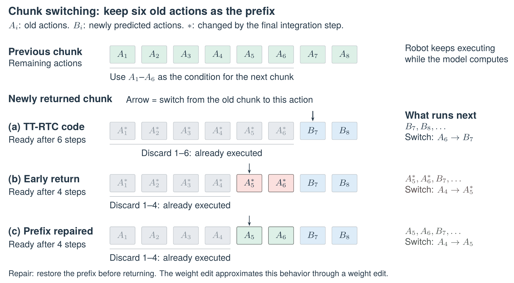

1 我们的想法与研究条件#
受 MIT 的 Weight-Space Programming [1] 启发，我们想检验：Frontier Model 能否理解一个已训练机器人策略的参数，并通过少量修改让机器人更快地执行动作、完成任务？我们将这个问题交给 Opus 5.5，让模型根据机制与目标推导权重修改。
我们提供目标与环境，由 Opus 5.5 提出假设、设计实验并选择解法。环境包括一张 NVIDIA GeForce RTX 4090、已训练的 \(\pi_{0.5}\) [2] Training-Time RTC checkpoint、模型与推理源码、本地 demonstration 和历史机器人执行数据。它通过 Claude Code 调用工具开展离线研究。所用 demonstration 与历史执行轨迹均采自 YAM 机械臂，后续真机验证也由我们在 YAM 上完成。Opus 5.5 的自主研究全程未操控机器人，也未获取在线物理反馈，仅使用已有记录进行离线实验。它统计了136 条历史执行轨迹（5 类任务）与 154 条人类 demonstration（3 类任务）；实际编辑另从已有数据中选取 12 条 demonstration（6 类任务）和 12 条历史执行轨迹（4 类任务）。任务包括投硬币、抓移动方块、叠方块、放瓶子和按压旋转时钟。
我们要求不使用反向传播、梯度优化器或 LoRA，允许前向实验和闭式拟合；尽量少改参数，保持生产推理与控制程序不变，并交付独立、可回滚的权重。20%–30% 的任务时间缩短是探索目标，稳定的 5%–10% 改善也有意义；需要检查平滑性和跨任务表现，并与原版、动作幅度缩放、轨迹时间缩放及随机权重修改比较。
实际得到的方案，由机制假设、对照实验和方法修正逐步形成。我们关注的不只是权重修改后的性能，也包括 Opus 如何发现问题、检验解释，并在失败后改变方向。第二节介绍其研究过程，第三节报告我们补充的真机与机制实验，最后讨论这一案例对 Robotics AutoResearch 的启发。
本文中，一个 action chunk 是策略一次预测的 50 步未来动作，每步包含两臂 12 个关节目标与 2 个夹爪目标，采样频率为 30 Hz。每轮执行 32 步，更新计划时将旧计划的前 6 步作为条件，即 RTC prefix。切换前后目标位置的突变称为 chunk 跳变；它描述命令的变化，而非机械臂瞬间移动。
2 Opus 5.5 的假设、验证与解法#
2.1 定位提速对象：推理等待与动作执行#
Opus 5.5 首先检查任务耗时是否主要来自等待模型推理。它读取部署配置，并对照 136 条历史 RTC 轨迹中的推理时间、动作命令和实测关节状态。一次推理约需 105–109 ms，明显短于约 1.073 s 的计划更新周期；记录中也未出现以等待下一次推理为主的明显空窗。随后，它用 154 条 demonstration 中的动作速度与停顿作为参考，转向分析策略生成的动作。
这一诊断将研究重点落在动作执行过程中的时间收益。Opus 5.5 沿两条线索继续验证：首先检查新旧 chunk 切换时的异常是否来自生成过程，再检验能否在保留任务路线的同时增加后续动作的推进量。前者形成前缀修复方案，后者形成节奏加速方案（通过 Q/K 投影编辑实现）；两者合并称为联合编辑。
2.2 修复保留动作前缀中的 chunk 跳变#
Opus 5.5 比较模型输出与实际执行命令后发现：前 6 步作为条件输入，但生成结果偏离了这些旧动作；部署通常只裁掉过期的前 4 步，剩余第 5、6 步的偏差便进入执行。原因是最后一次 flow matching 积分后，前缀没有再次恢复。
Opus 5.5 计算权重增量矩阵 \(\Delta W\)，将 \(W'=W+\Delta W\) 保存到新 checkpoint。Opus 修改的是最终归一化层里，将时间特征映射为 scale、shift 的线性层权重 \(W\)（图 1），即 final_norm_1.Dense_0.kernel。\(\Delta W\) 与它同为 \(1024\times3072\)，逐项指定权重增量。目标是让前缀更新量接近零，同时保持其他采样时刻的输出；推理代码不变。

原版时间调制过程如图 1 所示，原版在绿色位置使用 \(W\)。前缀使用生成时间条件 \(t=0\)，其他动作使用 \(1.0,0.9,\ldots,0.1\)；\(t\) 不是物理执行时间。时间编码及 time_mlp_in/out 将 \(t\) 映射为 1024 维特征 \(c_t\)，其中 \(c_0\) 不是零向量。对单个动作 token，令 \(x_t\) 为它经过 18 层 Transformer 后的隐藏特征；\(m_t\) 则是时间分支算出的三组调制值。原版模型通过 scale 和 shift 调整 \(x_t\)： \[
\begin{aligned}
m_t&=[\mathrm{scale}_t,\mathrm{shift}_t,\mathrm{gate}_t]=c_tW+b,\\
x_{\mathrm{out},t}&=\operatorname{RMSNorm}(x_t)\odot(1+\mathrm{scale}_t)+\mathrm{shift}_t,\\
v_t&=x_{\mathrm{out},t}W_{\mathrm{out}}+b_{\mathrm{out}}.
\end{aligned}
\](1) 这组公式是原版已有的计算，Opus 沿用它来推导编辑目标。\(\odot\) 表示逐元素乘法，gate 在此未使用。\(W_{\mathrm{out}},b_{\mathrm{out}}\) 属于线性层 action_out_proj，不是时间 MLP；其输出 \(v_t\) 是采样更新量。前缀修复保留 \(b,W_{\mathrm{out}},b_{\mathrm{out}}\)，只替换 \(W\)。
第一步：设定能让前缀更新量为零的目标。以下带撇号的量表示编辑后。Opus 将 scale 的目标设为全 \(-1\)，再求最小范数的 \(s^*\)，使它经线性动作输出层后为零： \[ \begin{aligned} \mathrm{scale}'_0&=-\mathbf1,\qquad\mathrm{shift}'_0=s^*,\qquad s^*W_{\mathrm{out}}+b_{\mathrm{out}}=0,\\ x'_{\mathrm{out},0}&=\operatorname{RMSNorm}(x_0)\odot\mathbf0+s^*=s^*,\qquad v'_0=0. \end{aligned} \](2) 因此不需要令 Transformer 的输出 \(x_0\) 本身为零；目标 scale 会消去它的影响，目标 shift 则令最终特征等于 \(s^*\)，并抵消输出层偏置。
第二步：计算调制值的目标改变量。以目标减原值，得到 \(d^{\mathsf T}\)；加回原调制值即可检查它是否达到目标： \[ \begin{aligned} d^{\mathsf T}&=[-\mathbf1-\mathrm{scale}_0,\ s^*-\mathrm{shift}_0,\ \mathbf0],\\ m_0+d^{\mathsf T}&=[\mathrm{scale}_0,\mathrm{shift}_0,\mathrm{gate}_0]+d^{\mathsf T} =[-\mathbf1,s^*,\mathrm{gate}_0]. \end{aligned} \](3) 第三步：求解 \(u\)，使增量只作用于前缀。Opus 将 10 个采样时刻的时间特征与前缀 \(t=0\) 的时间特征逐行堆叠，组成 \(A\in\mathbb R^{11\times1024}\)。它要找 1024 维系数 \(u\)，使前缀的点积 \(c_0u=1\)，其余十个点积 \(c_tu=0\)。把这些目标组成向量 \(r\)，统一求解： \[ \begin{aligned} A&=\operatorname{stack}_{\mathrm{rows}}(c_0,c_{1.0},c_{0.9},\ldots,c_{0.1}),\qquad r=(1,0,\ldots,0)^{\mathsf T},\\ u&=\underset{z}{\operatorname{argmin}}\,\|Az-r\|_2^2\qquad\text{(minimum-norm solution)}. \end{aligned} \](4) \(c_0u=1\) 表示给前缀加上完整的 \(d^{\mathsf T}\)；其余点积为 0 表示不加。\(c_0\) 来自原模型，\(u\) 来自这次求解。
写回权重并检查效果。我们希望时间特征经过新权重后，恰好多出 \((c_tu)d^{\mathsf T}\)。由于矩阵乘法满足结合律，这等于 \(c_t(ud^{\mathsf T})\)；因此将 \(ud^{\mathsf T}\) 作为权重增量即可： \[ \begin{aligned} &\Delta W=ud^{\mathsf T},\qquad W'=W+\Delta W,\qquad W'_{ij}=W_{ij}+u_i d_j,\\ &c_t\Delta W=c_t(ud^{\mathsf T})=(c_tu)d^{\mathsf T},\\ &m'_t=c_t(W+\Delta W)+b=m_t+(c_tu)d^{\mathsf T}. \end{aligned} \](5) \(\Delta W\) 的第 \(i\) 行为 \(u_i d^{\mathsf T}\)：所有行都由同一个向量缩放得到，只有一个独立方向，因此这是一项秩一修改。
在 36 个 demonstration 与 24 个历史执行观测上，前缀关节误差由约 0.095 rad 降至 \(4.49\times10^{-4}\) rad，后续动作最大变化约为 0.0034 rad，路径进度几乎不变。Opus 5.5 因此保留这一前缀修复，继续寻找提速方法；我们对该问题的代码与实验核对见第 3.3 节。
2.3 动作节奏假设与 RoPE 位置干预#
前缀修复没有让后续动作推进得更快。对于提速，Opus 5.5 在读取模型代码时提出：“My leading hypothesis is that action timing depends on RoPE positions.” 我们进一步展开这一假设：模型可能学到了动作位置间隔与动作位移的隐式联系；增大内部位置间隔、保持实际控制周期不变，可能让相同时间内的有效位移增加。
图 2 先概括这一步：改变模型读取动作序列的位置坐标，再检验预测动作是否推进得更快。
虚线是原版方向，实线是动作 i = 3、通道对 m = 0 增加旋转后的方向。Δθ = (s − 1)iωₘ。原版方向采用任意示意角度，向量长度保持不变；不同通道对的旋转速率不同。这是注意力内部的表示，不是机器人关节转角。
先在 teacher 中改变位置规则，检查生成动作；再将原版 Q/K 多转这个角度，得到拟合目标；最后求解能近似产生这些目标的新 Q/K 权重。候选模型推理时仍用原版位置规则，由新权重近似补上额外旋转。

实现：改变动作位置对应的 Q/K 旋转。
令 \(i=0,\ldots,49\) 为动作序号、\(P\) 为上下文 token 数。内部位置改变，实际执行间隔 \(\Delta t=1/30\) s 保持不变： \[ p_i=P+i,\qquad p_i^{(s)}=P+si,\qquad t_i^{\rm exec}=t_0+i\Delta t. \](6) RoPE 将位置编码为 Q/K 的旋转 [3]： \[ q_i=W_Q^{\mathsf T}x_i,\quad k_i=W_K^{\mathsf T}x_i, \qquad Q_i=R(p_i)q_i,\quad K_i=R(p_i)k_i. \](7) \(x_i\in\mathbb R^{1024}\) 是投影前的隐藏特征，\(W_Q,W_K\in\mathbb R^{1024\times256}\) 是单个 head 的投影权重。在每个 256 维 head 内，第 \(m\) 与 \(m+128\) 个通道配对旋转，\(m=0,\ldots,127\)。对其中一对 \((a,b)\)， \[ \begin{bmatrix}a'\\b'\end{bmatrix}= \begin{bmatrix}\cos\theta&-\sin\theta\\\sin\theta&\cos\theta\end{bmatrix} \begin{bmatrix}a\\b\end{bmatrix},\qquad \theta=p\,10000^{-m/128}. \](8) \(R(p)\) 表示全部 128 对通道的旋转。固定旋转前的内容向量，动作 \(i,j\) 的内积由原版变为 \[ Q_i^{\mathsf T}K_j=q_i^{\mathsf T}R(j-i)k_j,\qquad (Q_i^{(s)})^{\mathsf T}K_j^{(s)}=q_i^{\mathsf T}R\bigl(s(j-i)\bigr)k_j. \](9) 因此，干预放大的是动作之间的相对位置间隔。动作 Q 对保持不变的图像、文本和状态 K 的读取也会变化；经过 softmax 和对 V 的加权，影响后续动作生成。它不直接放大 V 或关节目标。
检验：位置干预是否增加沿原路线的推进。
Opus 5.5 执行两组对照：（1）在 36 个 demonstration 观测与 24 个历史执行观测上，将全部 18 层动作位置改为 \(P+si\)，测试 \(s=0.8,1.25,1.5,2.0\)；（2）在 36 个 demonstration 观测上保持 RoPE 不变，只将提供给模型的前 6 步动作加快至原来的 1.25、1.5、2.0 倍。各干预与原版使用相同观测和初始噪声。
它先将原版预测按不同倍速重采样，寻找与干预后关节轨迹最接近的速度：\(s=1.25\) 的 RoPE 干预对应约 1.12 倍，而仅加快前缀对应约 1.01 倍。因此，它继续研究位置干预。
随后，Opus 5.5 检验：在相同预测时刻，编辑版是否沿原版规划的路线走得更远。它进行正向运动学计算，将原版 TCP pose 的位置连成参考路线。将编辑版位置匹配到路线最近点，以该点的累计沿路距离除以原版同一时刻的沿路距离，得到路径进度比；编辑版各位置到路线的最近距离的均值为路径偏差（图 3）。

计算排除前 6 步条件。令 \(c_0(u)\) 为原版第 6–49 步连成并插值的 TCP 路线，\(L_0(u)\) 为从第 6 步到 \(u\) 的沿路距离，\(e_r\) 为编辑版第 \(r\) 步的位置，\(\mathcal I=\{6,\ldots,37\}\)。最近点、进度比和偏差为 \[ \begin{aligned} u_r^*&=\arg\min_{u\in[6,49]}\|e_r-c_0(u)\|_2,\\ g_r&=\frac{L_0(u_r^*)}{L_0(r)},\qquad \bar d=\frac{1}{|\mathcal I|}\sum_{r\in\mathcal I}\|e_r-c_0(u_r^*)\|_2. \end{aligned} \](10) 表 1 报告 \(g_{37}\) 与 \(\bar d\)（mm）。原版在比较区间内移动不足 15 mm 的手臂不纳入；每个观测内平均有效手臂，再跨观测取中位数。
表 1. 位置尺度与前缀加速对照。Opus 5.5 保存逐样本指标，我们按有效观测取中位数；RoPE 组为 60 个输入中的 58 个，前缀组为 36 个中的 34 个。
| 干预 | 尺度 | 纳入统计的观测数 | 路径进度比 | 路径偏差 |
|---|---|---|---|---|
| 动作 RoPE | 0.80 | 58 | 0.851 | 0.793 |
| 动作 RoPE | 1.25 | 58 | 1.131 | 1.229 |
| 动作 RoPE | 1.50 | 58 | 1.175 | 1.935 |
| 动作 RoPE | 2.00 | 58 | 1.009 | 4.674 |
| RTC 前缀时间压缩 | 1.25 | 34 | 1.004 | 0.492 |
| RTC 前缀时间压缩 | 1.50 | 34 | 1.004 | 0.796 |
| RTC 前缀时间压缩 | 2.00 | 34 | 1.007 | 1.134 |
表 1 显示，\(s=1.25\) 和 \(1.5\) 增加进度，\(2.0\) 的收益基本消失且偏差增大；仅加快前缀的作用很小。我们推测，固定采样间隔下学到的时间与动作映射，可能使位置缩放的收益存在限度。这是对非单调趋势的解释，尚不是已验证的原因。
Opus 5.5 选择 \(s=1.25\) 为主要目标。这个干预改的是动作专家注意力中的位置规则，权重不变。为了保持生产推理代码不变，它将此模型作为直接 RoPE teacher，尝试把干预效果内化到与原版结构相同的新权重中。
2.4 首次尝试：仅拟合末端动作输出层#
要检验的最小改动：仅改最后一层，能否复现 teacher 的最终动作？Opus 5.5 首先拟合从 1024 维特征到 14 个动作更新通道的输出层。teacher 提供最终动作 \(A_i^T\)；候选第 \(k\) 轮、位置 \(i\) 的状态为 \(z_{k,i}\)，末端隐藏特征为 \(h_{k,i}\)，剩余生成时间为 \(\sigma_k=1-k/10\)： \[ \begin{aligned} v_{k,i}^{*}&=\frac{z_{k,i}-A_i^T}{\sigma_k},\qquad v_{k,i}=B^{\mathsf T}h_{k,i}+b_0,\\ z_{k+1,i}&=z_{k,i}-0.1v_{k,i},\qquad k=0,\ldots,9,\quad i\geq6. \end{aligned} \](11) \(v^*\) 是朝 teacher 最终动作推进的目标更新量，不是机械臂速度。Opus 5.5 用带原权重正则的最小二乘拟合 \(B\)，偏置 \(b_0\) 固定；采样器迭代 10 次得到最终动作（图 4）。

分别检查拟合重建与新输入上的迁移。令 \(a_{i,j},a^T_{i,j}\) 为候选与 teacher 的最终关节目标，\(j\) 遍历 12 个关节；每个观测的关节误差为 \[ E_{\rm RMS}=\sqrt{\frac{1}{32\times12}\sum_{i=6}^{37}\sum_{j=1}^{12}(a_{i,j}-a^T_{i,j})^2}. \](12) 它先平方、平均再开根，以 rad 报告，再对观测取平均。为检查动作是否剧烈变化，对 TCP 位置 \(\mathbf p_i\) 计算加速度的变化率 jerk： \[ \mathbf j_i=\frac{\mathbf p_{i+3}-3\mathbf p_{i+2}+3\mathbf p_{i+1}-\mathbf p_i}{\Delta t^3},\qquad J=\sqrt{\frac1{29}\sum_{i=6}^{34}\|\mathbf j_i\|_2^2}. \](13) 报告 \(J_{\rm edit}/J_{\rm orig}\)，在观测内平均有效手臂；它不包含 chunk 切换，需与路径进度及偏差一起解释。
24 个 demonstration 观测上拟合三轮后，关节 RMS 为 0.0050 rad；另 12 个 demonstration 与 16 个历史执行观测上，误差增至 0.0239 rad，平均路径偏差为 8.256 mm，jerk 比为 3.245。重建效果未延续到测试输入，Opus 5.5 因而放弃输出层拟合，转向注意力内部。
2.5 转向注意力内部：拟合 Q/K 投影#
Opus 5.5 将拟合目标从最终动作移到 Q/K 表示：目标由已知旋转直接计算，再由新权重近似复现（图 5）。

第一步：构造中间表示目标。要让候选保留原生 RoPE \(R(P+i)\)，同时近似 teacher 的 \(R(P+si)\)，需在投影输出中补上额外旋转： \[ R(P+i)R(\delta_i)=R(P+si),\qquad \delta_i=(s-1)i. \](14) 因此，分别对 Q 和 K 构造目标： \[ y_i^Q=R(\delta_i)W_{Q,0}^{\mathsf T}x_i,\quad y_i^K=R(\delta_i)W_{K,0}^{\mathsf T}x_i. \](15) 目标 \(y_i\) 来自同一隐藏特征 \(x_i\) 的原版 Q/K 加已知旋转，无需更快动作的人工标签。
第二步：采集特征并闭式拟合。Opus 5.5 先检查特征采集前向是否改变原版输出，关节 RMS 为约 0.00037–0.00044 rad，低于采用的 0.002 rad 容差，才将特征和目标按行堆成 \(X\in\mathbb R^{N\times1024}\)、\(Y\in\mathbb R^{N\times256}\)，求解 \[ \begin{aligned} W_{\rm fit}&=\arg\min_W\left(\|XW-Y\|_F^2+\lambda_{\rm abs}\|W-W_0\|_F^2\right)\\ &=(X^{\mathsf T}X+\lambda_{\rm abs}I)^{-1}(X^{\mathsf T}Y+\lambda_{\rm abs}W_0),\\ \Delta W&=W_{\rm fit}-W_0,\qquad \lambda_{\rm abs}=\lambda_{\rm grid}\frac{\operatorname{tr}(X^{\mathsf T}X)}{1024}. \end{aligned} \](16) 第一项使新投影接近目标，第二项限制偏离原权重；\(\|\cdot\|_F^2\) 是元素平方和，\(I\) 是单位矩阵， \(N\) 为采集的特征行数，\(\lambda_{\rm grid}\) 为待选正则系数，按特征能量缩放。实现求解线性方程而非显式求逆，不使用反向传播；每轮重新采集候选的特征，V 投影保持不变。共享权重不直接接收动作序号，因此它依赖特征中已有的位置信息来近似额外旋转。
第三步：检查生成动作并调整拟合。初版在全部 18 层拟合 Q/K，两轮后拟合观测上与 teacher 的归一化动作 RMS 从 0.03694 降至约 0.00298。它检验的是最终动作，而非 Q/K 特征误差。改进版保留第 0 层，仅拟合第 1–17 层，相应 teacher 也仅在这些层修改 RoPE。它的考虑是：第 0 层输入尚未经过动作注意力混合，可能缺少让共享投影区分动作序号的信息。
第四步：在留出的观测上验证改进。Opus 5.5 从 12 条 demonstration 和 12 条历史执行轨迹中取 48 个观测拟合，另留 36 个时刻测试；时刻不重复，但来自同一批轨迹。三轮拟合后，共同测试上的进度比由初版约 1.17 增至 1.20，偏差由 1.26 降至 1.08 mm，jerk 比由 1.47 降至 1.37。Opus 5.5 因而保留 节奏加速编辑，接着检验修改强度及其与前缀修复的组合。
2.6 进一步施加参数约束，并与前缀修复合并验证#
Opus 5.5 用编辑强度 \(\alpha\) 控制拟合改变量： \[ W(\alpha)=W_0+\alpha\Delta W,\qquad\Delta W=W_{\rm fit}(s=1.25)-W_0. \](17) \(\alpha=0\) 为原版 Q/K，\(\alpha=1\) 为完整 节奏加速编辑；它与拟合时的位置尺度 \(s=1.25\) 是不同参数。测试 \(\alpha=0.25\) 至 \(1.5\) 时，进度先增加，随后饱和且偏差增大。将修改限制为秩 16、64、256 时，进度约为 1.06、1.10、1.16，低于完整 节奏加速编辑的约 1.20。
随后，它在 36 个相同测试观测上比较前缀修复、节奏加速编辑 与组合，并加入时间缩放和动作幅度缩放基线（系数均为 1.21445）。表 2 中路径与 jerk 指标纳入 35 个有效观测。Chunk 跳变取旧计划前 4 步与新计划第 5–13 步拼接邻域内的最大相邻 TCP 步长，再取两臂较大值；它包含正常相邻动作位移。
表 2. 相同测试输入上的离线比较。各指标为中位数；进度、偏差和 jerk 有效输入数为 35，chunk 跳变为 36。进度 1.214 倍表示相同时间内沿原路线推进更多，不代表成功任务时间缩短 21.4%。
| 方法 | 路径进度比 | 路径偏差 (mm) | jerk 比 | chunk 跳变 (mm) |
|---|---|---|---|---|
| 原版 | 1.000 | — | 1.000 | 44.223 |
| 仅前缀修复 | 1.000 | 0.178 | 1.004 | 5.822 |
| 仅 节奏加速编辑（\(\alpha=1\)） | 1.199 | 1.076 | 1.367 | 41.453 |
| 联合编辑 | 1.214 | 1.071 | 1.363 | 5.442 |
| 轨迹时间缩放 | 1.257 | 0.038 | 0.827 | 44.223 |
| 动作幅度缩放 | 1.054 | 4.870 | 1.217 | 53.529 |
组合候选同时增加了路径进度并减小 chunk 跳变，但 chunk 内 jerk 比升至 1.363。时间缩放的偏差与 jerk 更低，却保留了原版跳变；随机权重方向的路径偏差达到 24.05 mm、jerk 比为 31.07，未能保留原行为。Opus 5.5 最终选择联合编辑、\(\alpha=1\)；由于未比较前缀修复+时间缩放，这不证明编辑优于所有后处理方案。
2.7 交付与研究开销#
Opus 5.5 检查保存、回滚与原生重载后，交付独立 checkpoint，共修改全模型 1.16% 的参数，8 个测试输入均得到有效输出。首轮研究用时 1 小时 50 分 42 秒，调用工具 193 次（Bash 163、Write 18、Read 8、其他 4），发起 187 次 API 请求。181 次有用量记录，合计输出 184,614 token，另有缓存写入 433,426、读取 36,783,281 token；缺失的 6 次请求不按零计入，缓存读取包含重复上下文。以上均不包含后续真机分析和本文编写。
3 我们后续的实验与分析#
我们随后检验实际任务用时与 chunk 跳变，并通过注意力区域干预和前缀处理对照分析内部作用。以下为我们补充的实验，不计入 Opus 5.5 首轮研究开销。
3.1 真机实验：任务用时与动作质量#
我们在放瓶子、投硬币和叠方块三个任务上比较原版 Training-Time RTC 与联合编辑版（\(\alpha=1\)）。每个任务的两组测试均使用相同的物体布局，原版与编辑版各执行 3 次。 （1）放瓶子。六次均完成四瓶放置。两组采用相同的 32 步执行长度、6 步 RTC 前缀及动作时间设置。表 3 的用时从正式执行开始，到视频确认第四瓶在桶内放手为止，以真实采集时间戳计时。
表 3. 相同布局下放瓶子任务的成功执行时间。每组 3 次，均值后为样本标准差；编号仅表示组内重复，不表示随机配对。
| 重复 | 原版 RTC (s) | 联合编辑，\(\alpha=1\) (s) |
|---|---|---|
| 1 | 22.69 | 20.45 |
| 2 | 22.17 | 21.87 |
| 3 | 22.41 | 22.05 |
| 均值 \(\pm\) 标准差 | \(22.42\pm0.26\) | \(21.46\pm0.88\) |
编辑版平均提前 0.96 s 完成，时间缩短 4.3%。这是相同布局下各三次成功执行的比较，不能据此估计成功率变化。
同一完成区间内，我们在每次计划切换处计算相邻命令的 TCP 距离，取两臂较大值，再按每条轨迹统计并对组内三条轨迹取平均（表 4）。原版与编辑版分别包含 60、58 次切换，首次进入计划不计入。
表 4. 同六条成功记录、同完成区间内的动作质量。各行先按轨迹计算，再对每组 3 条轨迹等权平均；“最大值”是每条轨迹最大值的组均值。
| 指标 | 原版 RTC | 联合编辑 | 降低比例 |
|---|---|---|---|
| 平均 chunk 跳变 (mm) | 26.23 | 1.43 | 94.5% |
| 试验内跳变 P95 的均值 (mm) | 43.57 | 4.53 | 89.6% |
| 试验内最大跳变的均值 (mm) | 51.49 | 5.87 | 88.6% |
| 命令 jerk P95 (m/s\(^3\)) | 1040.40 | 234.78 | 77.4% |
| 平均末端跟踪误差 (mm) | 19.59 | 19.17 | 2.1% |
平均 chunk 跳变降低 94.5%，末端跟踪误差基本保持。完整命令轨迹按 30 Hz 三阶差分计算的 jerk P95 也下降 77.4%；它包含切换处的改善，与仅统计 chunk 内部的离线 jerk 不同。
（2）投硬币：提速主要发生在夹取后的搬运阶段。我们以实测夹爪的持续闭合、张开划分动作阶段。表 5 显示，从左手闭合到交接放开的总用时由 5.85 s 降至 4.64 s，缩短 20.7%；其中，左手闭合至右手闭合的搬运阶段缩短 22.1%，开始到夹取及交接放手的用时基本不变。
表 5. 相同布局下投硬币任务的分阶段用时：原版与编辑版各 3 次，表中为各组均值。阶段边界来自实测夹爪状态；开始时刻为正式执行的首个有效计划 tick。最后一行是中间两阶段的合计。
| 阶段 | 原版 (s) | 编辑版 (s) | 用时缩短 |
|---|---|---|---|
| 接近与夹取：开始至左手闭合 | 8.034 | 8.039 | \(-0.1\%\) |
| 搬运至交接：左手闭合至右手闭合 | 5.451 | 4.245 | 22.1% |
| 交接放手：右手闭合至左手张开 | 0.399 | 0.396 | 0.7% |
| 夹取后至交接放开（合计） | 5.849 | 4.641 | 20.7% |
这六条记录的完整任务成功数为原版 0/3、编辑版 1/3。因此，这里的 20.7% 表示夹取后至交接放开的阶段用时缩短，与瓶子实验的整项任务完成时间分开报告。
（3）叠方块：没有观察到明显提速。两组各 3 次测试最终均成功，成功数同为 3/3。其中，原版第 2 次执行在堆叠失败后重新抓取并完成任务，因此总用时较长，为 28.27 s。表 6 保留全部六次执行的完成时间；为比较无需重试时的执行速度，我们排除这次记录后计算均值。原版其余 2 次与编辑版 3 次的平均完成时间分别为 19.46、19.28 s，仅缩短 0.19 s（约 1.0%），且单次用时相互重叠。
表 6. 相同布局下叠方块任务的完成时间。从正式执行开始计时，到视频确认最终方块放开且由下方堆叠支撑为止。\(\dagger\) 表示堆叠失败后重试成功：保留该次结果，但不纳入下方的速度比较均值。编号仅表示组内重复。
| 重复 | 原版 RTC (s) | 联合编辑(s) |
|---|---|---|
| 1 | 19.42 | 19.56 |
| 2 | \(28.27^{\dagger}\) | 19.00 |
| 3 | 19.50 | 19.26 |
| 均值（排除重试） | 19.46（\(n=2\)） | 19.28（\(n=3\)） |
| 最终成功数（全部测试） | 3/3 | 3/3 |
这些真机结果表明，权重编辑在我们的任务中确实取得了收益：放瓶子更快且 chunk 跳变更小，投硬币的搬运阶段也有所加快。但这仍是一次初步尝试，提速幅度有限。这与第 2.3 节的假设及离线结果相呼应：模型学到的动作位置与位移关系可能提供调节动作节奏的入口。
3.2 机制分析：哪些注意力变化保留了进度收益#
我们在相同的 8 个瓶子任务观测上比较原版、直接 RoPE teacher 与 节奏加速编辑，固定初始噪声、RTC 条件和采样步数，不叠加前缀修复。首先，节奏加速编辑的上下文注意力与 teacher 更接近：分布距离 JSD 为 0.00173，低于其与原版的 0.00792（越低越接近）。这支持拟合保留了位置干预的部分内部效果。

图 6 标出两个区域：右下角是动作读取动作，左下角是动作读取图像、文本和状态。在每层当前同一份隐藏特征 \(X\) 上，分别用原版（\(r=0\)）和 节奏加速编辑（\(r=E\)）的 Q/K 权重，按式 (7) 计算投影并施加原始 RoPE，得到 softmax 前的分数： \[ L^r_{ij}=\frac{(Q_i^r)^{\mathsf T}K_j^r}{\sqrt d}, \qquad L^r=[\,L^r_{\rm ctx}\mid L^r_{\rm act}\,],\quad r\in\{0,E\}. \](18) 其中 \(i\) 为动作 query，\(j\) 为 key，\(d=256\)；ctx 表示图像、文本和状态，act 表示动作。上下文缓存 K 保持不变。两种区域干预分别为： \[ \begin{aligned} A_{\rm act\text{-}only}&=\operatorname{softmax}\!\left([\,L^0_{\rm ctx}\mid L^E_{\rm act}\,]+M\right),\\ A_{\rm ctx\text{-}only}&=\operatorname{softmax}\!\left([\,L^E_{\rm ctx}\mid L^0_{\rm act}\,]+M\right). \end{aligned} \](19) \(M\) 为原始注意力掩码（可读取位置为 \(0\)，屏蔽位置为 \(-\infty\)）。组合分数后统一归一化，再计算 \(AV\) 并继续前向传播；V 投影权重保持不变。由于 softmax 分母共享，改变一块分数也可能改变另一块的概率。
表 7. 注意力路径干预对预测动作的影响，8 个输入的中位数。进度沿原路径计算，分别取第 21、37 步；所有变体均使用同一批手臂，按原版预测累计移动至少 15 mm 的条件选择。前缀修复均关闭，jerk 为 chunk 内指标。这些是离线计划的几何量，不是实测完成时间。
| 干预 | 第 21 步进度比 | 第 37 步进度比 | 偏差 (mm) | jerk 比 |
|---|---|---|---|---|
| 原版 | 1.000 | 1.000 | — | 1.000 |
| 直接 RoPE teacher | 1.203 | 1.101 | 1.012 | 1.105 |
| 完整 节奏加速编辑 | 1.227 | 1.140 | 1.028 | 1.289 |
| 仅动作 key 分数 | 1.178 | 1.087 | 1.100 | 1.249 |
| 仅图像与 prompt/state 分数 | 1.057 | 1.039 | 0.484 | 0.981 |
表 7 显示，第 37 步的进度比由完整 节奏加速编辑的 1.140 变为仅动作间干预的 1.087、仅上下文干预的 1.039。动作之间的分数干预保留了较多离线进度收益。
3.3 在参数空间修复前缀一致性问题#
出人意料的是，前缀修复让我们注意到了一个在 Training-Time RTC（TT-RTC）官方公开代码中未处理的 bug：实际延迟短于预设前缀时，被最后一次积分改写的条件动作仍可能进入执行。我们首先简单介绍什么是 TT-RTC。
TT-RTC 要解决的是：机器人在等待下一段chunk推理完时，如何继续运动，并顺畅切换到新 chunk。图 7 顶行是上一个 chunk 剩余的动作 \(A_1,A_2,\ldots\)。模型从A1开始进行下一段动作的推理时，机器人继续执行当前chunk；我们把预计在等待期间执行的前 6 步 \(A_1\)–\(A_6\) 作为条件（prefix），让模型生成接在后面的新动作 \(B_7,B_8,\ldots\)。TT-RTC 官方代码的固定延迟仿真使用相同的条件长度与延迟。以图 7(a) 的 6 步为例，旧 chunk 执行到 \(A_6\) 后，新结果恰好返回。程序丢弃新输出的前 6 步，从 \(B_7\) 开始执行，完成 chunk 切换 [4], [5]。

图 7(b) 展示了结果提前返回时的问题。模型只计算了 4 个动作步的时间，机器人也只执行到旧 chunk 的 \(A_4\)，接下来仍需要 \(A_5,A_6\)。然而，条件前缀在 flow matching 采样中仍参与积分更新。以我们使用的 10 次采样迭代为例，第 1–9 次积分对前缀的改动，都会在下一轮计算前被给定的旧动作替换；第 10 次积分后却直接返回，没有再替换一次。因此，新结果中留下的可能是 \(A_5^*,A_6^*\)，而不是原计划的 \(A_5,A_6\)。此时切换 chunk，机器人就会接到两个被改写的动作，产生跳变。TT-RTC 官方代码在图 7(a) 的设定下会丢弃全部前缀，因此没有暴露这一问题。
对于需要 IK 的部署，为覆盖求解时延波动，我们通常会保守地预留更长的 prefix。延迟波动越大，这个预留长度与某次实际延迟的差距也可能越大；一旦结果提前返回，就会留下更多仍需执行的条件动作。OpenWAM [6] 原版使用 i2rt 封装的 Mink 微分 IK，迭代求解二次规划（QP）；包含 IK 的动作解码耗时中位数为 22.9 ms，最高 921.2 ms。随后采用的 DLS gate 根据雅可比矩阵最小奇异值调节运动正则、限制关节变化，耗时仍从中位数 49.3 ms 到最高 177.7 ms。
图 7(c) 展示了修复后的切换：即使在 \(A_4\) 后拿到新结果，接下来执行的仍是原计划的 \(A_5,A_6\)。Opus 5.5 的前缀修复让这些条件动作对应的采样更新量接近零，避免最后一次积分改写它们。它修改的是动作专家最后一个归一化层的时间调制权重 final_norm_1.Dense_0.kernel。在当前设置下，其效果几乎等价于返回前执行 actions[:6] = condition[:6]，即把前 6 步重新替换为给定的旧动作；Opus 通过修改参数近似实现了这一步。
我们随后用相同的 36 个观测（12 个本地 demonstration、24 个历史 rollout 观测）补充对照，固定随机种子和采样步数，比较缩短条件、仅使用前缀修复、直接恢复前缀三种处理，均不包含 节奏加速编辑。
表 8. 前缀处理对照：36 个相同观测，假设实际裁剪 4 步。切换点步长为旧计划第 4 步至新计划第 5 步的 TCP 距离，取双臂较大值，再取样本中位数。后续动作差异为第 7–38 步、12 个关节相对原版的 RMS，取样本均值。
| 方法 | 切换点步长 (mm) | 后续动作差异 (rad) |
|---|---|---|
| 原版，6 步条件 | 19.158 | 0.000000 |
| 原版，4 步条件 | 4.930 | 0.002228 |
| 仅前缀修复，6 步条件 | 1.798 | 0.000375 |
| 代码修复，返回前恢复 6 步 | 1.885 | 0.000000 |
表 8 显示，相对原版的 19.16 mm，前缀权重修复与直接恢复前缀的代码修复，分别将切换点步长中位数降至 1.80、1.88 mm，后续动作变化也很小。这支持两者在前缀修复上的近似等效。缩短为 4 步条件也能改善当前对照，但不能消除实际延迟短于条件长度时的同类问题。
Opus 通过修改时间调制权重，使条件前缀的更新量接近零，在参数空间修复了官方公开代码未处理的这一 bug：实际延迟短于预设 prefix 时，被采样更新改写的条件动作仍可能进入执行序列。对于需要 IK、必须为延迟波动预留余量的部署，这项前缀保护尤其重要。我们没有指定这一缺陷；Opus 在研究中主动发现它，并在不改推理代码的约束下给出了参数层面的修复。
结语#
我们本以为，这会是一次 Claude 直接修改权重的 Magic：模型理解了参数，凭直觉做出几处修改，机器人便能更快地完成任务。
然而事实并非如此。Opus 5.5 从对 RoPE 的理解出发，提出位置编码可能影响动作节奏的假设，设计对照实验加以检验，再通过常见的拟合方法将干预效果写入权重。输出层拟合的测试效果不佳，它便转向注意力内部的 Q/K 投影。整套 Weight-Space Editing，就这样由机制理解、数学推导和实验反馈逐步构成。我们认为，这种“Weight Editing”能够 work，不仅来自 Opus 对模型参数的理解，更来自它对研究知识的归纳、对不同机制的理解，以及将这些理解转化为假设和实验的能力。
这也引出了一个更重要的问题：当 Frontier Model 能够跨越多个 Domain 提出假设、设计实验、修正方法，这种 AutoResearch 能力，将为具身领域科学问题的发现与解决带来什么改变？
在 Robotics 知识逐渐被 Frontier Model 内化的时代，下一代、甚至未来几代模型，会如何改变我们提出问题、验证想法和推进研究的方式？这个案例还无法回答，但它让这些问题变得具体，也让我们对接下来会发生什么充满期待。
希望本文能揭开 Frontier Model for Robotics 这一方向的一角。我们更想知道，下一次由 frontier models 提出、并被实验验证的想法，会不会也改变我们对 Robotics Research 的理解。
参考文献
Rikiya Takehi, Jayden Teoh, Alex Zhang, Omar Khattab. Sparks of Weight-Space Programming: LLMs can natively read & write neural network weights. MIT CSAIL, 2026. https://rikiyat.github.io/blog/weight-space-programming/.
Physical Intelligence et al. \(\pi_{0.5}\): a Vision-Language-Action Model with Open-World Generalization. arXiv:2504.16054, 2025. https://arxiv.org/abs/2504.16054.
Jianlin Su et al. RoFormer: Enhanced Transformer with Rotary Position Embedding. arXiv:2104.09864. https://arxiv.org/abs/2104.09864.
Kevin Black, Allen Z. Ren, Michael Equi, Sergey Levine. Training-Time Action Conditioning for Efficient Real-Time Chunking. arXiv:2512.05964v2. https://arxiv.org/html/2512.05964v2.
Physical Intelligence. real-time-chunking-kinetix, commit
9296f31d62d5. https://github.com/Physical-Intelligence/real-time-chunking-kinetix. 本文核对src/model.py与src/eval_flow.py。Yuran Wang et al. OpenWAM: An Open, Modular Exploration Towards Systematic World-Action Model Pretraining. arXiv:2609.07398, 2026. https://arxiv.org/abs/2609.07398.